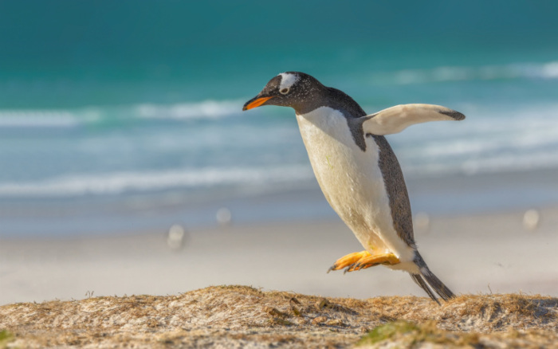
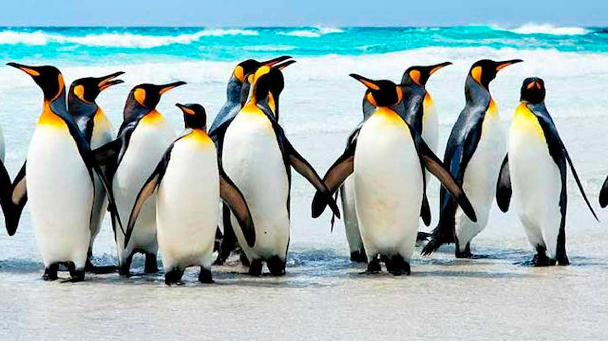
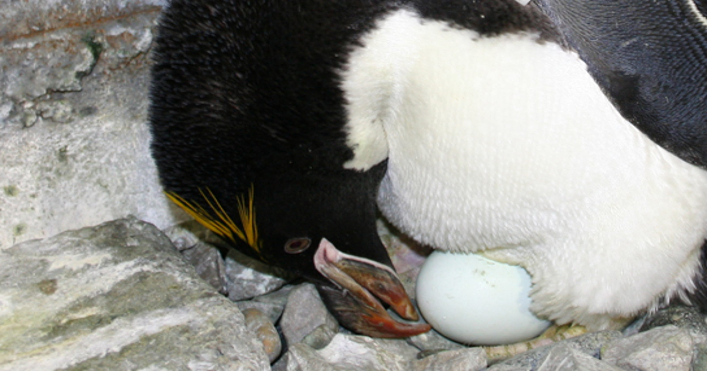
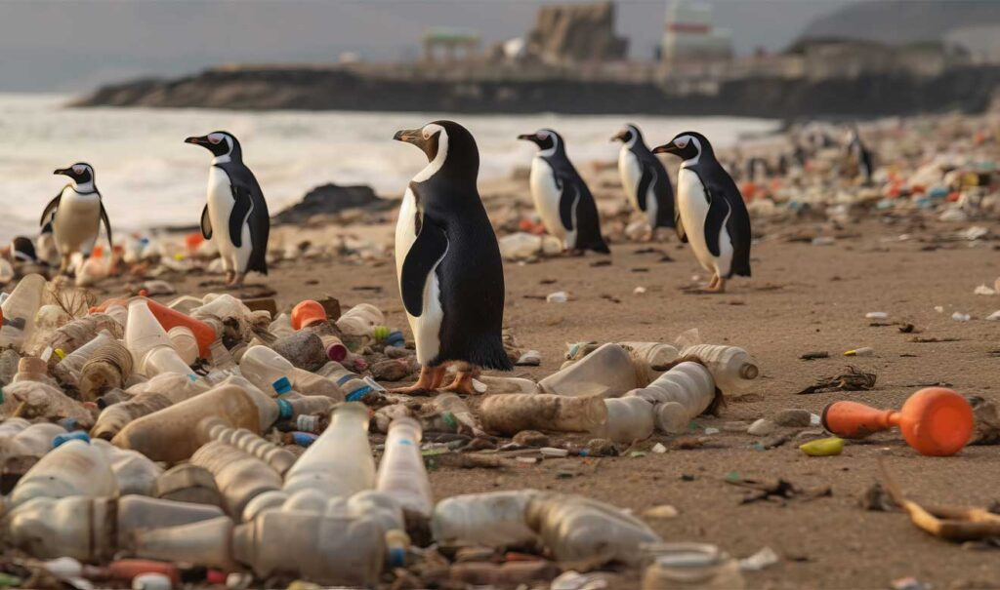

Conoce el hábitat, geografía y sus hábitos...
| Nombre Común | Pingüino |
|---|---|
| Nombre Científico | Spheniscidae |
| Dieta | Carnívora; Peces y Crustáceos |
| Esperanza de Vida Promedio | Hasta 20 años |
| Tamaño | 30 - 130 centímetros |
| Peso | 1 - 40 kilos |
| Reproducción | Ovíparo |
Hábitat y Geografía
Los pingüinos, aves marinas emblemáticas del hemisferio sur, encuentran su hogar en una amplia variedad de hábitats a lo largo de las regiones frías del planeta. Desde las gélidas costas de la Antártida hasta las islas subantárticas y las costas de Sudamérica, África y Australia, estas aves han adaptado sus estilos de vida a entornos diversos y exigentes. Algunas especies, como el majestuoso pingüino emperador, se aventuran en las vastas extensiones de hielo antártico, mientras que otras, como el encantador pingüino de Magallanes, se congregan en las rocosas costas sudamericanas en busca de alimento y refugio.
Estas aves acuáticas dependen en gran medida de los hábitats costeros, donde pueden sumergirse en las frías aguas oceánicas para alimentarse de peces y krill. Las colonias de cría se establecen en áreas protegidas, donde pueden anidar en el suelo o entre las rocas, buscando refugio contra los elementos y los depredadores. Desde las vastas extensiones de hielo hasta las cálidas playas tropicales, la adaptabilidad de los pingüinos refleja su fascinante capacidad para prosperar en los rincones más remotos del mundo.
Reproducción
Los pingüinos llegan a la tierra para incubar sus huevos y criar a sus crías. La mayoría de las parejas de pingüinos permanecen juntas durante largos períodos y suelen poner uno o dos huevos en cada nidada. Ambos padres se turnan para mantener los huevos calientes, y una vez que eclosionan, se ocupan de alimentar y proteger a sus crías. Durante unas semanas al año, miles de crías se reúnen mientras sus padres salen a buscar alimento. Cuando los padres regresan, emiten un llamado único que permite a las crías reconocerlos y reunirse en un bullicioso grupo.
Poco después de que las crías desarrollen plumas, los padres comienzan el proceso de muda. A diferencia de otras aves que pierden plumas gradualmente, los pingüinos experimentan una muda catastrófica, durante la cual pierden todas sus plumas a la vez. Este proceso se lleva a cabo en unas pocas semanas, ya que durante este tiempo los pingüinos deben ayunar, ya que no pueden cazar sin sus plumas impermeables.
Conservación
Alrededor de dos tercios de las especies de pingüinos enfrentan una seria amenaza según la Lista Roja de la UICN, colocándolos entre las aves marinas más vulnerables a la extinción. La pérdida de hábitat, las enfermedades y las infecciones transmitidas por turistas son factores preocupantes. La pesca comercial en el Océano Austral también representa un peligro significativo al reducir a la mitad el suministro de peces en la Península Antártica, lo que obliga a los pingüinos a competir por alimento y aumenta el riesgo de capturas accidentales en las redes de pesca.
Una de las mayores amenazas para las poblaciones de pingüinos es el cambio climático. El calentamiento de las regiones polares ha provocado la disminución del hielo marino, crucial para la alimentación y la crianza de los pingüinos. Con las condiciones climáticas cambiantes, se proyecta que la Antártida podría perder la mayoría de sus pingüinos para fines de siglo. Para sobrevivir, es posible que deban buscar nuevos hábitats.